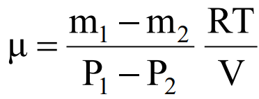

Молярной массой называется масса одного моля вещества. В единицах СИ эта величина измеряется в моль/кг. Молем какого-либо вещества называется количество этого вещества, содержащее столько же структурных элементов (молекул, атомов и т. д.), сколько атомов содержится в 0,012 кг изотопа углерода С12.
Один моль любого газа содержит одинаковое число молекул, называемое числом Авогадро NA. Из опытов найдено, что NA = 6,02 * 1023 моль-1. Молярную массу газа можно определить из уравнения газового состояния.
При не очень высоких давлениях, но достаточно высоких температурах газ можно считать идеальным. Молекулы такого газа имеют пренебрежимо малый собственный объем и не взаимодействуют друг с другом на расстоянии. Столкновения молекул между собой и со стенками сосуда абсолютно упругие. Состояние идеального газа описывается уравнением Клапейрона-Менделеева (уравнение состояния):
где Р – давление газа; V – объем газа; m – масса газа; μ – молярная масса газа; R = 8,31 Дж/(моль*К) – универсальная газовая постоянная; Т – абсолютная температура газа.
Из предыдущего уравнения можно получить формулу для молярной массы газа:
Если измерение давления Р, объема V, температуры Т газа, т. е. термодинамических параметров состояния газа, входящих в формулу (2), не вызывает особенных трудностей, то определение массы выполнить практически невозможно, так как взвешивание газа возможно только вместе с 4 колбой, в которой он находится. Поэтому для определения μ необходимо исключить массу сосуда. Это можно сделать, рассмотрев уравнение состояния двух масс m1 и m2 одного и того же газа при неизменных температуре Т и объеме V.
Пусть в колбе объемом V находится газ массой m1 при давлении Р1 и температуре Т. Уравнение состояния для этого газа имеет вид:
Откачаем часть газа из колбы, не изменяя его температуры. После откачки масса газа, оставшегося в колбе, и его давление уменьшились. Обозначим их соответственно m2 и Р2 и снова запишем уравнение состояния:
Из предыдущий уравнений получим:
Полученная формула (5) дает возможность определить μ, если известно изменение массы газа (но не сама масса), а также изменение давления, температура и объем газа.
данной работе исследуемым газом является воздух, термодинамические параметры которого таковы, что его можно считать идеальным газом. Воздух представляет собой смесь азота, кислорода, углекислого газа, аргона и других газов.
Формула (5) пригодна и для определения μ смеси газов. Найденное в этом случае значение μ представляет собой некоторую эффективную молярную массу смеси газов. Молярная масса смеси газов μc может быть рассчитана и теоретически:
где mi и μi – масса и молярная масса i-го компонента смеси; k – число компонентов смеси; в знаменателе - масса всей смеси
Если известна молярная масса газа, то можно легко определить еще одну важную характеристику газа – его плотность ρ. Плотность газа – это масса единицы объема газа:
Определив m1/V из уравнения Клапейрона-Менделеева, получим:
Это плотность воздуха в начальном состоянии.
Плотность смеси газов можно вычислить по данной, подразумевая под μ эффективную молярную массу смеси.